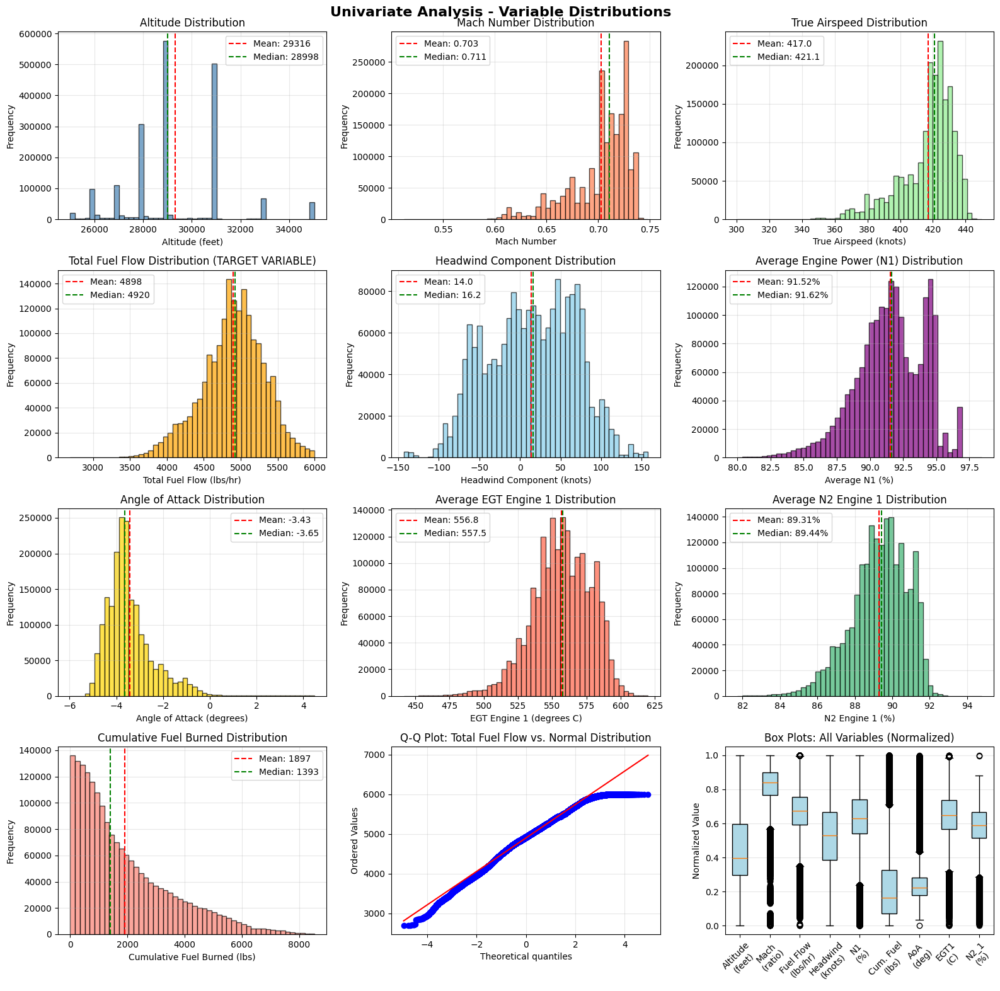
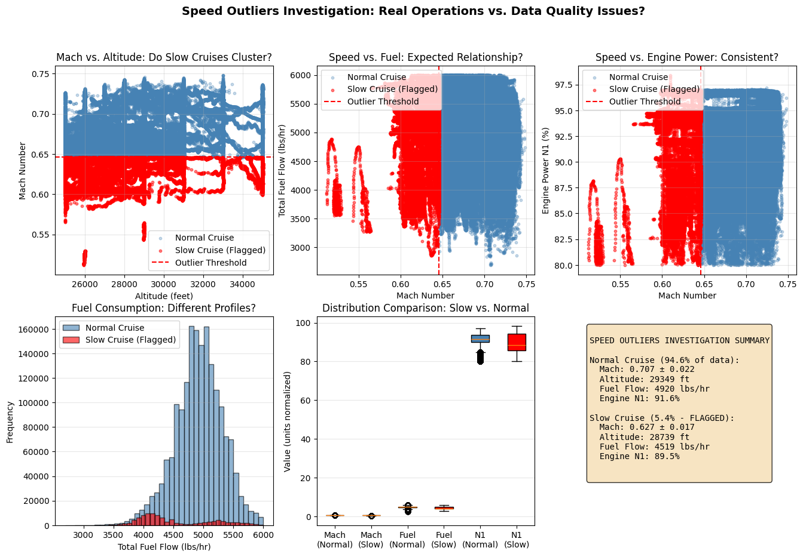
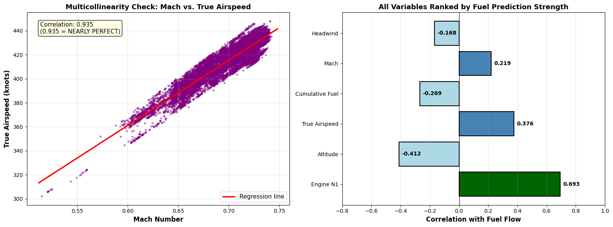
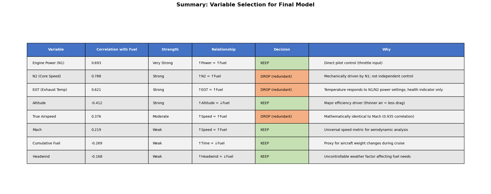
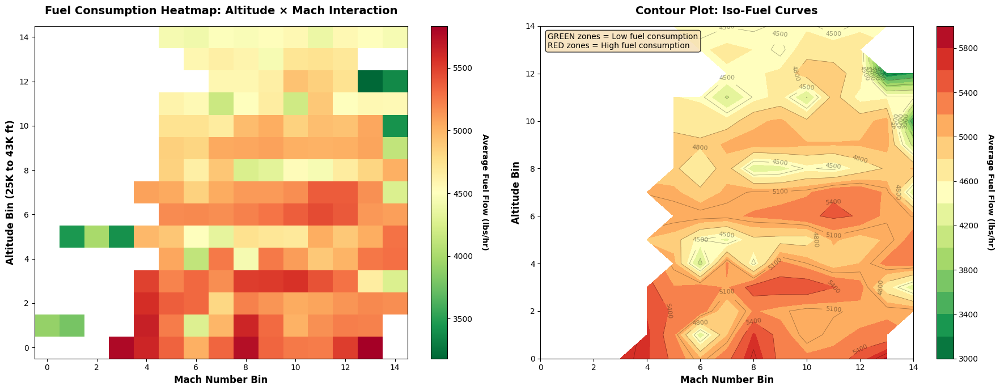
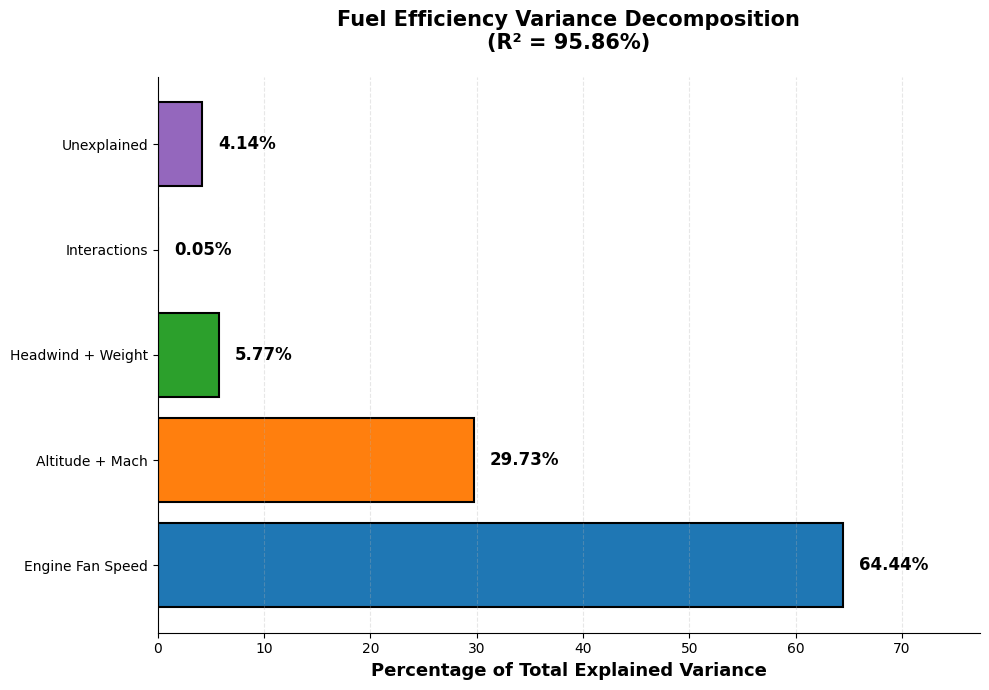
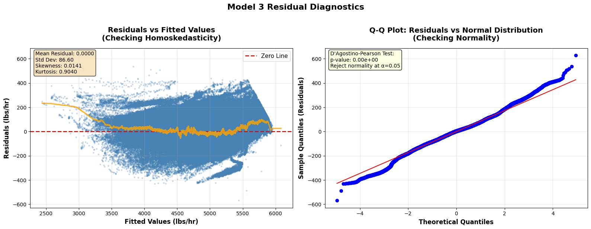

Aircraft Fuel Efficiency Optimization
A Statistical Analysis of Cruise Phase Operations for Commercial Aviation
DATA 5100: Foundation of Data Science | Seattle University | Fall 2025
Executive Summary
This project analyzes 1.88 million high-frequency flight recorder measurements from NASA's DASHlink Aviation Safety Reporting System to identify the primary drivers of fuel consumption during commercial aircraft cruise operations.
Key Finding
Engine performance management (N1 fan speed) offers approximately 2.2 times the fuel savings potential of altitude-speed optimization—a result that challenges conventional industry wisdom about flight optimization priorities.
Project Metrics
Research Question
"Which operational parameters have the greatest impact on fuel consumption, and how should airlines prioritize improvement initiatives?"
Methodology
Data Source
- Source: NASA DASHlink Aviation Safety Reporting System
- Aircraft: Tail 687 (wide-body, 4 engines)
- Sampling Rate: 4 Hz (high-frequency data)
- Flight Hours: ~130 hours of cruise operations
Statistical Methods
- One-Way ANOVA with effect sizes (η²)
- Two-Way ANOVA testing interaction effects
- Sequential Regression Modeling (6 nested models)
- Nested F-Tests for model comparisons
- Variance Decomposition (orthogonal contributions)
Analysis & Visualizations
1. Exploratory Data Analysis
Comprehensive univariate analysis of all flight parameters including altitude, Mach number, fuel flow, engine metrics, and environmental factors.

Distribution analysis of 10 key flight variables showing means, medians, and Q-Q plots for normality assessment.
2. Discovery: "Slow Cruise" Operations
During exploratory analysis, we identified an unexpected pattern: 5.4% of data points showed unusually low Mach numbers. Investigation revealed this as a deliberate fuel optimization strategy used during heavy weight conditions.

Investigation of "slow cruise" operations showing the relationship between Mach number, altitude, fuel consumption, and aircraft weight.
3. Correlation Analysis & Variable Selection
Systematic analysis of predictor correlations with fuel flow to identify the most important variables and address multicollinearity concerns.

Left: Multicollinearity check showing Mach-Airspeed correlation (r=0.935). Right: Variables ranked by fuel prediction strength, with Engine N1 showing the strongest correlation (0.693).
4. Variable Selection Decision Matrix

Final variable selection decisions based on correlation strength, relationship direction, and theoretical justification.
5. Altitude × Mach Interaction Analysis
Two-way visualization examining how altitude and speed jointly affect fuel consumption.

Heatmap and contour plot showing fuel consumption patterns across altitude-Mach combinations. Green zones indicate optimal efficiency; red zones indicate high consumption.
6. Key Result: Variance Decomposition
The central finding of this analysis—engine fan speed (N1) dominates fuel consumption variance, accounting for 64.44% of explained variance.

Critical insight: Engine performance monitoring offers 2.2× more fuel savings potential than traditional altitude-speed optimization strategies.
7. Model Diagnostics
Residual analysis confirming model assumptions and validating the regression results.

Residual vs. fitted values plot (checking homoskedasticity) and Q-Q plot (checking normality). The model shows good fit with near-zero mean residuals.
Key Findings
| Factor | % Explained Variance | Business Priority |
|---|---|---|
| Engine Fan Speed (N1) | 64.4% | 1st — Engine Monitoring |
| Altitude + Mach Number | 29.7% | 2nd — Flight Planning |
| Headwind + Weight | 5.8% | 3rd — Environmental |
| Interaction Terms | <0.1% | Negligible |
Business Recommendations
Priority 1: Engine Performance (64%)
- Implement real-time N1/EGT monitoring systems
- Deploy predictive maintenance scheduling
- Establish optimal power band operational protocols
Priority 2: Flight Planning (30%)
- Simplified altitude-speed optimization guidelines
- Factors can be treated as independent (no complex conditional logic needed)
Priority 3: Environmental (6%)
- Standard wind optimization practices sufficient
- Weight management through existing procedures
Key Challenge: Many airlines may be overinvesting in sophisticated flight management systems while underinvesting in engine condition monitoring and predictive maintenance.
Limitations & Future Work
Current Limitations
- Single aircraft type (results specific to Tail 687)
- Cruise-only analysis (excludes climb/descent phases)
- Observational design (associations, not causal effects)
- 2012 data (procedures may have evolved)
Future Research
- Extend analysis to heterogeneous fleets
- Incorporate climb and descent phases
- Develop predictive maintenance models
- Prospective intervention studies
Technologies Used
Project Resources
Contact
Email: dcnguyen060899@gmail.com
LinkedIn: https://www.linkedin.com/in/duwe-ng/